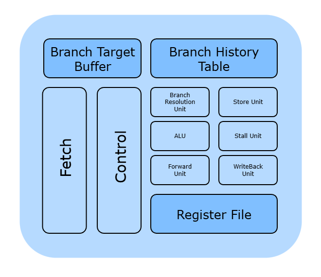
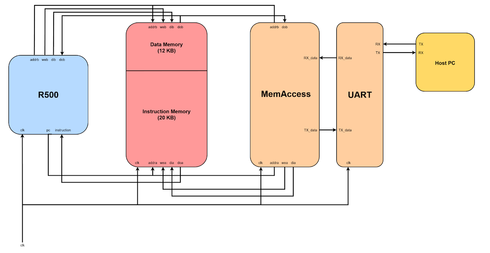
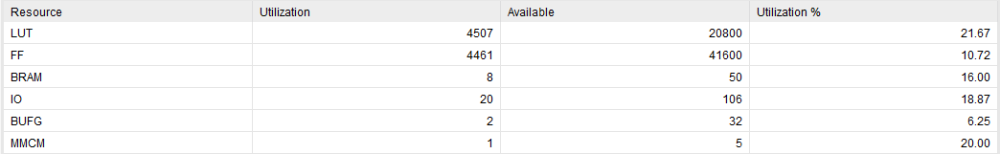

R500
The objective of this project was to design and implement a 32-bit processor on the Xilinx Artix-7 FPGA that is 100% compliant with the RV32I ISA.

Summary


Computer Architecture
This project taught me several core computer architecture concepts. The first concept I learned was CPU microarchitecture design. After months of research, I learned about critical components in a processor's datapath like the Register File, Arithmetic Logic Unit, and Control Unit. This research also revealed to me all the different ways an ISA could be implemented, ranging from a simple single-cycle design to a complete superscalar out-of-order design. I ultimately chose to implement the RV32I ISA as a single-issue, in-order, pipelined design, given that I had only a few months to complete this project.
The second concept I learned was pipelining and hazards. Pipelining involves breaking down an instruction into several smaller stages, allowing for a faster clock speed and hence a higher throughput. While understanding pipelining was relatively simple, understanding how to detect and respond to hazards was more difficult. The first type of hazard I handled was read-after-write (RAW) hazards. These hazards are dealt with by utilizing forwarding, which means passing an updated register's value to a following instruction before it needs it. Hence, by implementing a Forward Unit in my design, RAW hazards ultimately had no effect on CPU throughput.
The next hazard I dealt with was load-use hazards, which occur when a load instruction to one register is immediately followed by another instruction that uses that same register. Load-store hazards are dealt with by stalling the pipeline, which means the CPU will freeze the instructions that follow the load instruction until the load from memory is complete. Unlike RAW hazards, the load-store hazards have a direct impact on CPU performance, given that the pipeline must be stalled for one clock cycle. Hence, average throughput is reduced when these hazards are present.
The final type of hazard I handled were control hazards, which can happen in two ways. The first type of control hazard (which I'll call Type 1) happens when the CPU doesn't have a branch prediction or computed target address available when the branch instruction is fetched. If the branch is later determined to be taken, the pipeline must flush out the instructions that weren't supposed to be fetched. The second type of control hazard (which I'll call Type 2) happens when the branch predictor makes an incorrect prediction, which also results in the pipeline being flushed. Both control hazards result in decreasing the CPU's average throughput, similar to the load-use hazard. However, Type 1 control hazards can be eliminated almost entirely*, by providing the CPU early access to branch predictions and target addresses in the IF stage. The R500 does this through the use of a Branch Target Buffer (BTB) and Branch History Table (BHT). The BTB stores computed target addresses while the BHT stores branch predictions, and both structures are indexed by a combination of the program counter (PC) and the global branch history shift register. Minimizing Type 2 control hazards is less straightforward as they heavily depend on the type of branch predictor used as well as the structure of the code being executed.
The third concept I learned from this project was memory hierarchy. While I didn't implement instruction or data caches in this project, I still implemented a 2-way set associative cache for the BTB. Designing the BTB taught me the different types of caches (i.e., direct mapped, fully associative, set associative) along with the benefits and drawbacks of each type. I decided to implement the BTB as a set associative cache since it was a hybrid of the other cache types, and if I wanted to change my design to a different type, it would be relatively easy. For hardware simplicity, I used a first-in-first-out (FIFO) replacement algorithm for the sets. Due to the fact that the BTB was used for both branch and jump instructions, I also used a flag bit in each BTB line that indicated whether the data was for a branch or jump instruction.
The fourth concept I learned during this project was quantifying CPU performance. The key metrics I focused on measuring were clock speed, clock cycles per instruction (CPI), instruction throughput/instructions per second (IPS), and branch predictor accuracy. Clock speed is ultimately determined by the slowest pipeline stage, and understanding this helped me with timing optimizations later in synthesis. CPI measures CPU performance independent of clock speed, and indicates how long it takes on average to complete one instruction. In theory, the best CPI you can achieve for a program is 1.0, but in reality, the optimal CPI is closer to 1.1-1.2 when you consider that many programs have hazards that lead to stalls and flushes. Since stalls are unavoidable with load-use hazards, the only hazards the CPU can minimize are control hazards. Hence, minimizing CPI is done through effective handling of control hazards. IPS is based on the last two metrics, being a product of clock speed and the inverse of CPI (or IPC). Finally, branch predictor accuracy is the ratio of correct predictions to total predictions made during the runtime of a program. I provided all four of these metrics to give full context for the R500's performance, but at the bare minimum, you need to know two out of three metrics from clock speed, CPI, and IPS to fully understand a processor's capabilities.
*For branch instructions, the CPU needs to compute the target address at least once so a Type 1 hazard is unavoidable in this case; additionally, JALR instructions compute a non PC-relative target address, so these results cannot be stored in the BTB (at least in its current form), leading to another unavoidable Type 1 hazard.
Digital Design Verification
Through this project, I learned two different methodologies on verifying digital designs: constraint random verification (CRV) and direct testing. As the name might suggest, CRV involves randomizing inputs to an RTL module under specific constraints. CRV is extremely useful for covering a wide variety of test cases for a module with relatively little effort. For example, in my BTB testbench, I provided random PC values along with computed target addresses for the BTB to store. However, both of these random values were subject to the constraint that they must fit inside the instruction memory's address space, as well as being divisible by 4 (since RISC-V requires word-aligned memory).
In addition to CRV, directed tests are essential for proper verification. Direct testing requires explicitly writing out each test case, which leads to it being more useful for testing edge cases. For example, my MemAccess testbench tests a specific case where during a memory read operation, ADDR_LOW = ADDR_HIGH, which should return a single data word from memory. During both CRV and direct testing, I also utilized SystemVerilog assertions to define fundamental properties of my modules, which helped me catch errors quickly during simulation.
FPGA Design
While my main goal of this project was achieving ISA compliance, that didn't stop me from optimizing the design for performance. To increase performance, I focused on optimizing the critical path of my implemented design on the FPGA. The critical path refers to the slowest path in the CPU, and it is what limits a CPU's maximum clock speed. Within the critical path, there are two kinds of delays: logic and routing. Logic delays are the delay associated with signals passing through logical elements like registers or multiplexors, while routing delays are delays that come from the time it takes for a signal to travel from one storage element to another (i.e., pipeline registers). In my particular case, routing delay was responsible for approximately 2/3 of the total delay in the critical path. Hence, I decided to focus on minimizing routing delay in my attempt to maximize the clock speed.
One of the first changes I made was reducing the BRAM capacity in my design. I initially used the maximum amount of BRAM on the FPGA, 225 KB. However, this approach resulted in long wires being routed from the R500 to far corners of the FPGA where the BRAM blocks were located. Therefore, I decided to reduce the memory to 32 KB, yielding a 10 MHz increase in clock speed. With more time, I probably would have been able to implement an L1 cache that would help reduce the delay between the R500 and BRAM for larger memory capacities.
Following the memory capacity change, I focused on splitting up pipeline registers into smaller individual registers. My initial designs used massive 200+ bit pipeline registers, but I realized that forcing different values from each pipeline stage into one large register limited Vivado's ability to optimize the routing of these signals. By breaking the pipeline registers up, I allowed registers to be placed closer to the elements that used them, optimizing routing and achieving a 1 MHz increase in clock speed.
Unfortunately, these were the only changes I had time to implement. If I return to this project, I will take a closer look at the timing report and understand what aspects of my design can be changed to improve timing significantly (ideally pushing my clock speed to 100MHz+).
What's Next?
In the future, I may add on a few new features/optimizations to the R500. Here are some of my ideas:
- 100MHz+ Clock Speed
- Superscalar Design
- Out of Order Design
- Data/Instruction Caches
- I/O Support
- Multiple Core Design
- Support for RISC-V extensions (i.e., floats, multiplication)
- Exceptions/traps and CSRs